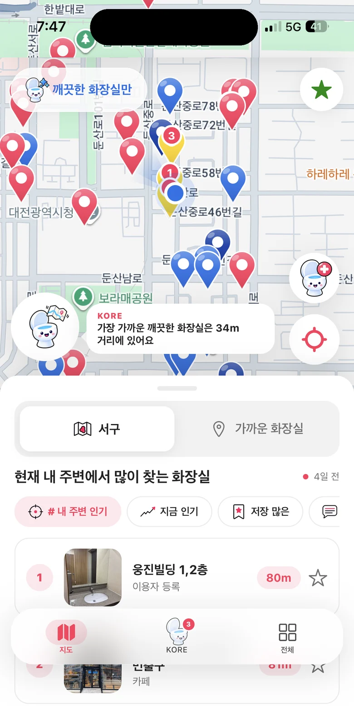
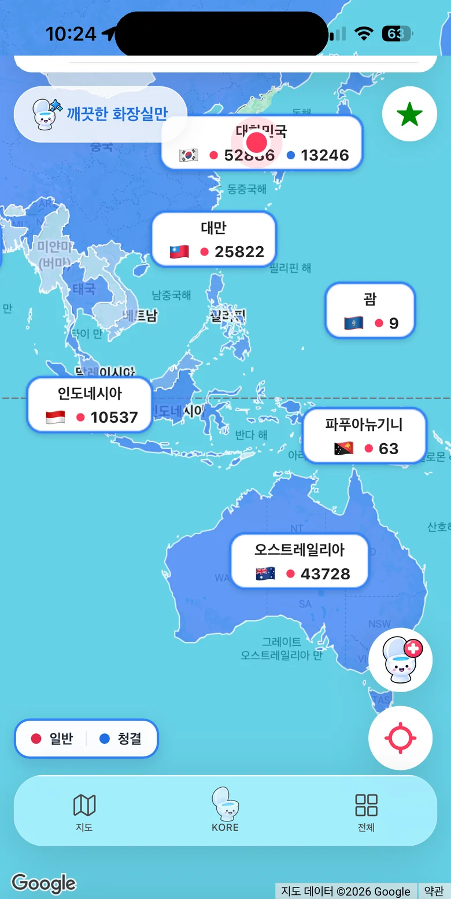
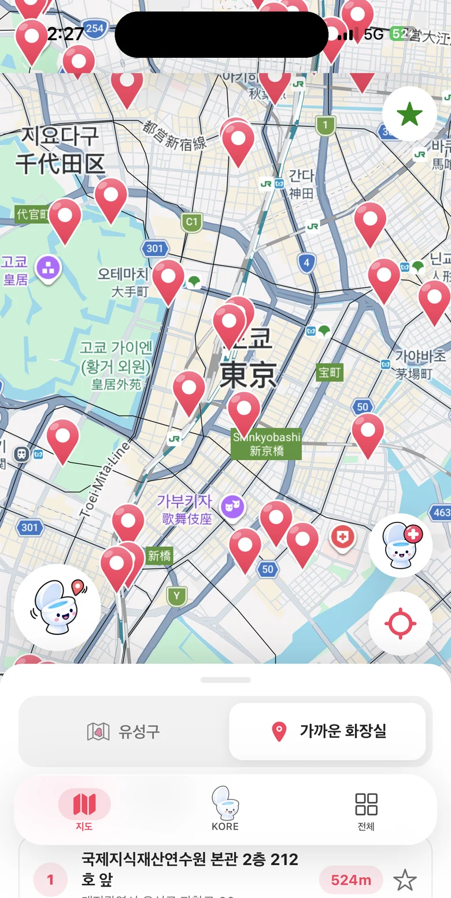
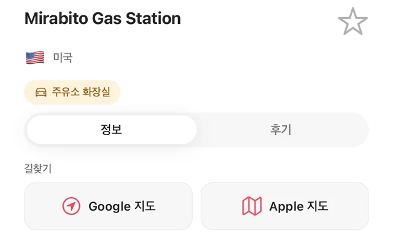
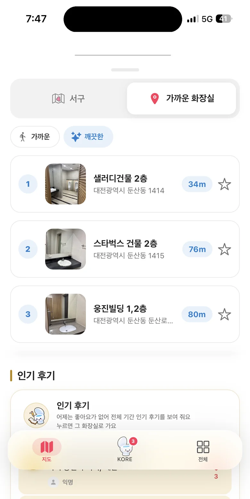
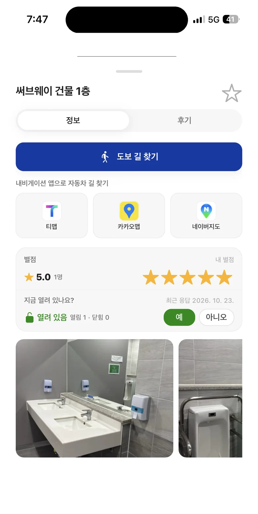
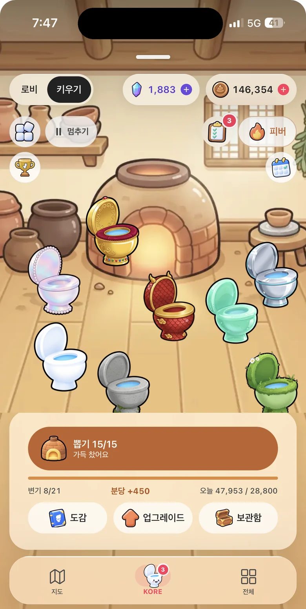
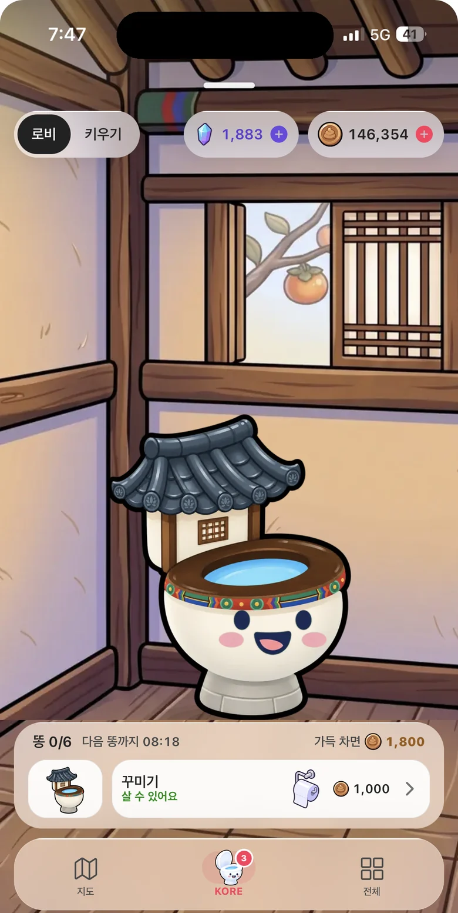

수정 · 삭제 요청
정보가 다르거나 없어진 화장실이라면, 어떤 화장실이든 상세 화면에서 바로 알려주세요.
서울에서도, 도쿄에서도, 뉴욕에서도. 앱을 켜면 지금 내 위치에서 가장 가까운 화장실이 거리순으로 뜨고, 누르면 바로 길을 알려줍니다.
무료 · iOS & 안드로이드 · 가입 없이 바로 사용




낯선 도시에서 제일 막막한 순간, 화장실이 급할 때. KORE는 230여 개 나라의 화장실을 한 지도에 담았습니다. 지도를 멀리 보면 나라마다 화장실이 몇 곳인지, 가까이 보면 핀 하나하나가 보입니다.



지도 아래 시트에서 [가까운 화장실]을 누르면 지금 위치에서 가까운 순서대로 나옵니다. 가장 가까운 세 곳은 지도에도 노란 핀과 1·2·3 번호로 짚어줍니다.



화장실 앱인데 키우는 재미까지. 물을 내려 코인을 모으고, 같은 변기 둘을 합쳐 다음 단계로. 평범한 하얀 변기가 어디까지 변하는지는 직접 확인해 보세요.





30단계 · 이스터에그 변기 · 도자기 공방 가마 강화
 1단계
1단계 4단계8단계
4단계8단계 12단계
12단계 ?16단계
?16단계 ?20단계
?20단계 ?25단계
?25단계 ?30단계
?30단계 ?이스터에그
?이스터에그로그인 없이도 화장실을 추가하고, 틀린 정보는 고쳐달라고 요청할 수 있습니다. 검토를 거쳐 모두의 지도에 반영됩니다.

위치를 찍고 이름과 사진을 남기면 끝. 내가 쓴 언어에서 나머지 언어로 자동 번역됩니다.

운영자가 하나씩 확인합니다. 승인되면 알림으로 알려드리고, 코인·크리스탈 보상도 들어옵니다.

승인된 순간부터 모든 사용자의 지도에 나타나고, 기여자 랭킹에 쌓입니다.
정보가 다르거나 없어진 화장실이라면, 어떤 화장실이든 상세 화면에서 바로 알려주세요.

별점과 한마디를 남기면 다른 언어로 번역돼 전해집니다. 내 후기에 답글이 달리면 알림이 와요.

앱에서 보낸 피드백에 운영자가 직접 답장하고, 답장이 오면 알림으로 알려드립니다.
메뉴부터 화장실 이름·주소·후기까지. 한국에 온 친구에게도, 해외에서 만난 여행자에게도 그대로 추천하세요.

화장실 찾기, 길 찾기, 추가·후기, KORE 키우기까지 전부 무료로 쓸 수 있습니다. 더 원하는 분만 구독하세요.
광고 포함 · 가입 없이
추천
월 구독 · 가격은 스토어 결제 화면 기준
월 구독 · 광고만 없애고 싶다면
구독은 스토어의 구독 관리에서 언제든 해지할 수 있고, 해지해도 결제한 기간이 끝날 때까지 그대로 이용할 수 있습니다.
 ❓ 자주 묻는 질문
❓ 자주 묻는 질문
네. 2.2 업데이트부터 230여 개 나라의 화장실이 지도에 나옵니다. 해외 화장실은 이름·주소·설명을 앱 언어로 번역해 보여주고, 길 안내는 Google 지도나 Apple 지도로 넘겨줍니다. 한국의 화장실 정보와 앱 안의 도보 길 찾기는 이전과 그대로입니다.
네. 무료로 내려받아 화장실 찾기와 길 찾기, 추가·후기, KORE 키우기까지 바로 쓸 수 있습니다(광고 포함). 광고 없이 쓰고 싶다면 선택형 월 구독인 KORE 프리미엄 또는 광고 제거를 이용하세요. KORE의 코인·크리스탈 충전은 원하는 분만 하는 선택 사항입니다.
아니요. 화장실 찾기는 물론 화장실 추가·수정 요청·후기 작성까지 로그인 없이 할 수 있습니다. 가입해 두면 휴대폰을 바꿔도 KORE 진행과 즐겨찾기, 기록이 그대로 이어지고, 게스트로 쌓은 기록도 로그인한 계정으로 옮겨집니다.
필수는 아닙니다. 다만 허용하면 지도가 지금 계신 곳에서 열리고 가까운 순서와 거리가 함께 표시됩니다. 위치는 앱이 켜져 있는 동안에만 사용하고, 백그라운드에서는 수집하지 않습니다.
화장실을 눌러 상세 화면의 "정보가 틀렸나요? 수정·삭제 요청하기"로 알려주세요. 어떤 화장실이든, 로그인하지 않아도 요청할 수 있고 검토 후 반영됩니다. 보낸 요청은 전체 탭 → 내 마커 · 피드백에서 확인하실 수 있습니다.
받아두면 언젠가 꼭 씁니다. 설치하고 위치 권한만 허용하면 준비 끝.